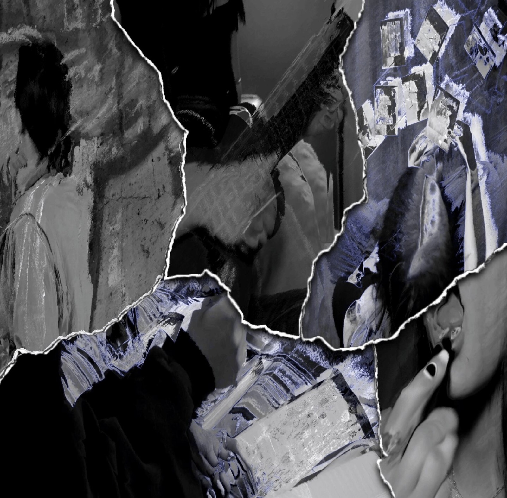
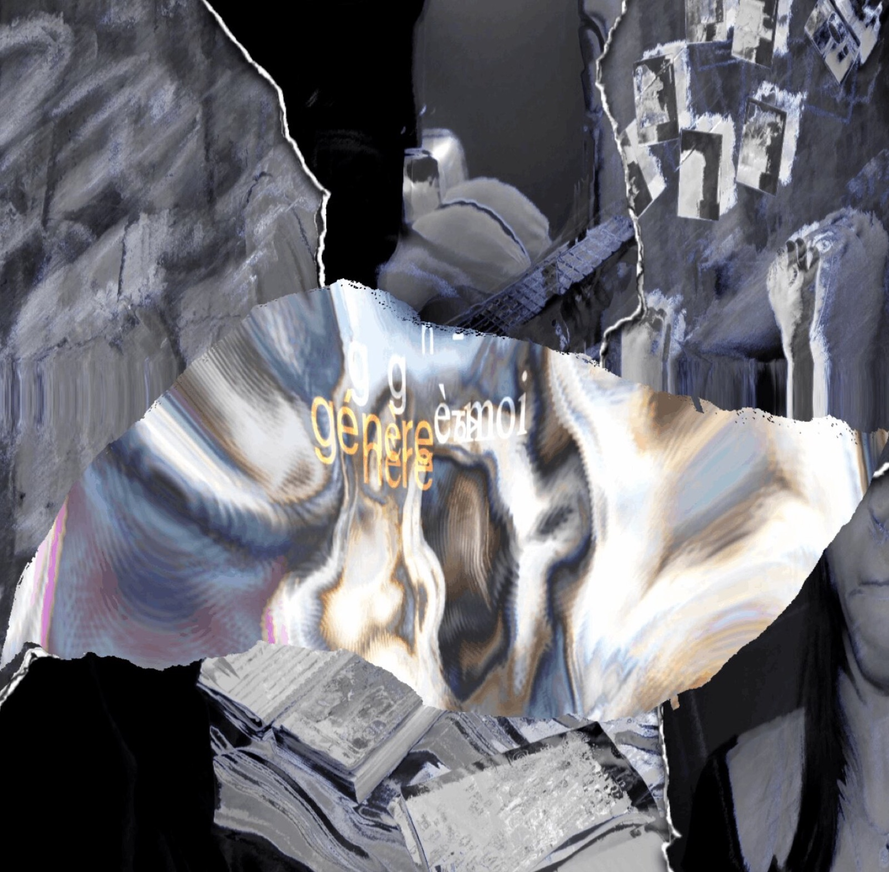
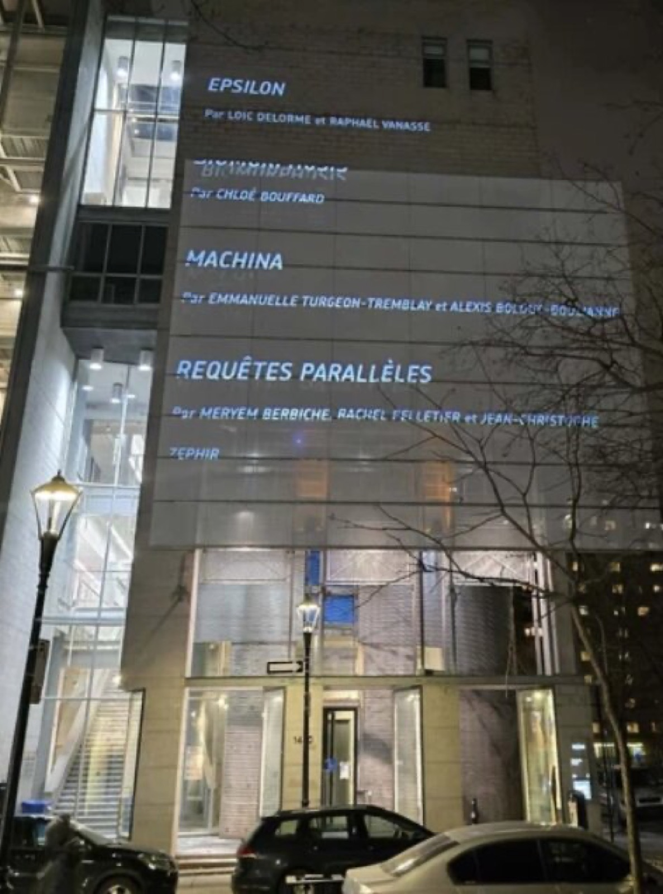
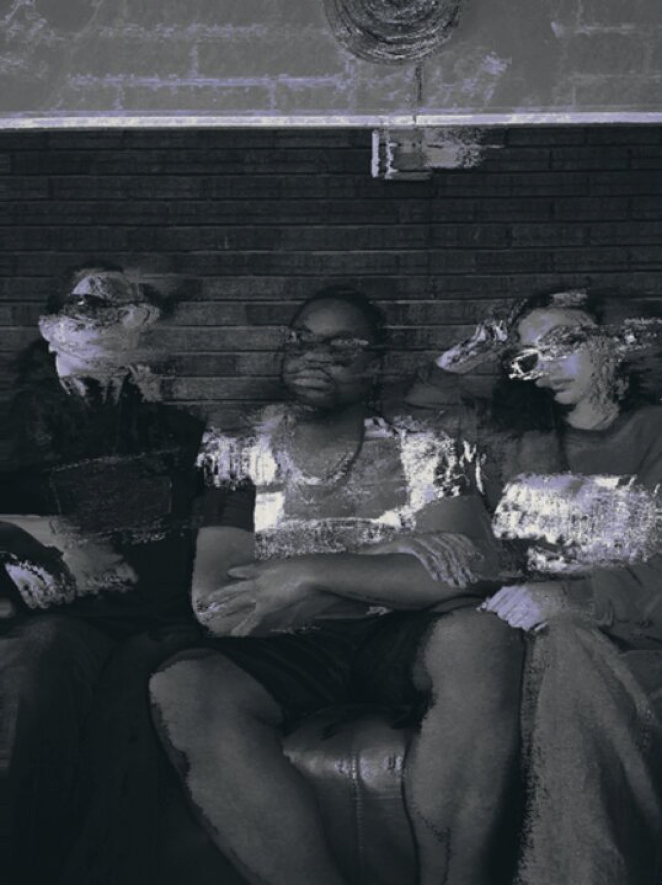

Cliquer pour regarder
Animation 2D/3D
(10/22)
Pourquoi déléguer à une machine ce que le corps, l'œil et la main savent encore faire ?
Requêtes Parallèles explore la tension entre l'imaginaire généré par l'intelligence artificielle et les gestes concrets, souvent poétiques, du quotidien. Présentée au festival Minute Mapp ➡ et projetée sur le pavillon de design de l'UQAM pendant Lumino ➡.
(Processus)
Comment le film est construit.
La voix de l'IA est absente. Il ne reste que les traces des requêtes : fragiles, presque illisibles, perdues dans les fissures d'un monde en construction.
Textures naturelles, glitchs et datamosh traduisent la lutte entre la production automatisée et l'expression humaine.


Le film a été projeté en grand sur la façade du pavillon de design de l'UQAM, et présenté au festival Minute Mapp. J'en ai fait le son et les effets sonores.


Images6 photos